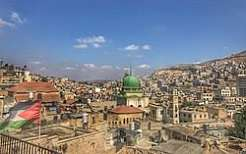
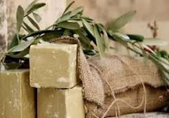
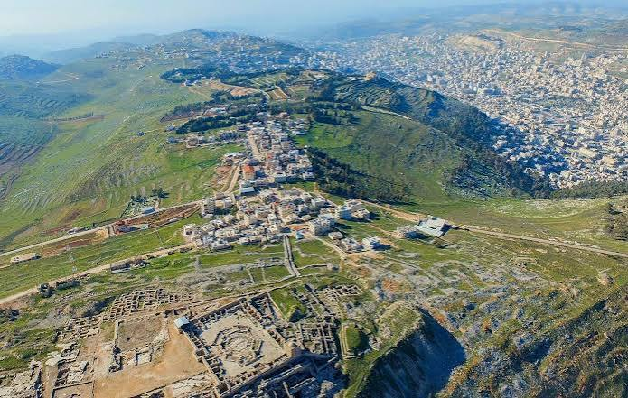
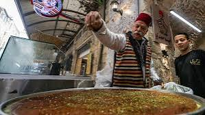

1. البلدة القديمة

تتميز البلدة القديمة في نابلس بأزقتها وأسواقها الشعبية ومبانيها التاريخية، وهي مكان مناسب للتعرف على التراث الفلسطيني.
يمكن التجول في الأسواق ومشاهدة المحلات التقليدية والتعرف على الحياة اليومية في المدينة.
2. الصابون النابلسي

تشتهر نابلس بصناعة الصابون التقليدي المصنوع من زيت الزيتون، وهي حرفة تراثية ارتبطت بتاريخ المدينة.
يمكن التعرف على مراحل صناعة الصابون وأهميته في التراث الفلسطيني.
3. جبل جرزيم

يُعد جبل جرزيم من المعالم المعروفة في نابلس، ويتميز بإطلالاته على المدينة والمناطق المحيطة بها.
يمكن الاستمتاع بالمناظر الطبيعية والتعرف على الأهمية التاريخية والثقافية للمكان.
4. الكنافة النابلسية

تشتهر نابلس بالكنافة النابلسية، وهي من أشهر الحلويات الفلسطينية التي يقصدها الزوار لتذوقها.
يمكن إنهاء الجولة بتذوق الكنافة والتعرف على أحد أشهر الأطباق التقليدية في المدينة.
مدة الزيارة المقترحة: 30 دقيقة.خطوات زيارة المعالم
- ابدئي الجولة من البلدة القديمة.
- تعرّفي على صناعة الصابون النابلسي.
- استمتعي بالمناظر من جبل جرزيم.
- اختتمي الجولة بتذوق الكنافة النابلسية.